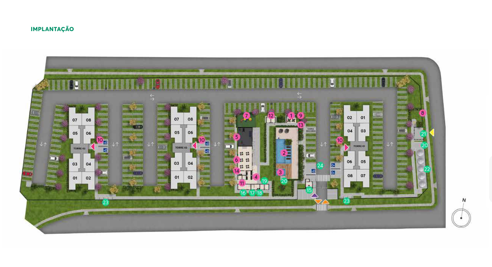
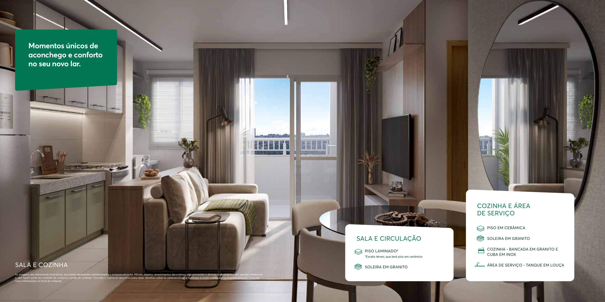
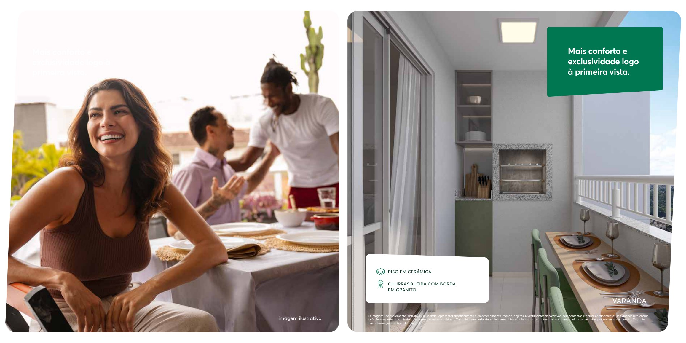
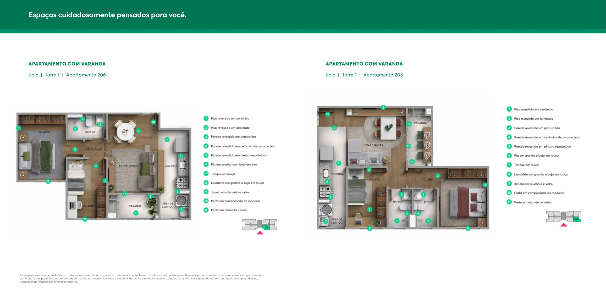

Posição do sol · estudo regional
Estimativa astronômica para a latitude regional de Anápolis (-16,33°), na data mostrada. Horário solar, não horário civil. Não calcula sombras nas torres nem insolação de um apartamento. Para isso faltam levantamento georreferenciado, alturas e plantas técnicas cotadas. Norte do empreendimento: consultar a seta na implantação oficial.Ambientes decorados oficiais
Referências do folder público Épic. Móveis e decoração são ilustrativos e não fazem parte da entrega.


Plantas oficiais
Torre 1, apartamentos 206 e 208. Não aplicar a outra unidade sem conferir sua tipologia.

O que já é oficial e o que falta
As duas imagens são do próprio Épic, com as cores e a implantação divulgadas pela MRV. A ficha técnica informa três torres e 256 unidades.
Esta perspectiva 3D é uma imagem oficial. A maquete navegável aproximada está no botão do início e é uma reconstrução específica desta implantação, separada da referência oficial. Não é modelo técnico da construtora.
Para uma maquete técnica navegável
Faltam pranchas arquitetônicas cotadas das torres, elevações/alturas e implantação georreferenciada. Sem isso, não dá para prometer posição exata das unidades ou sombras fiéis. O piloto mantém a referência oficial enquanto esses arquivos são obtidos.